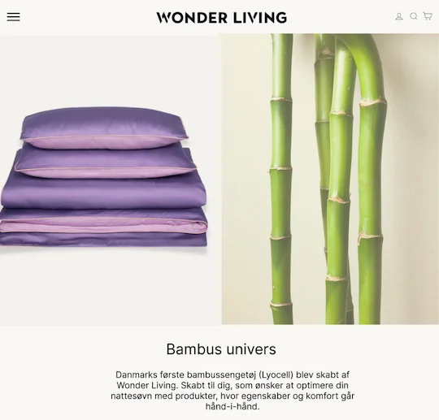
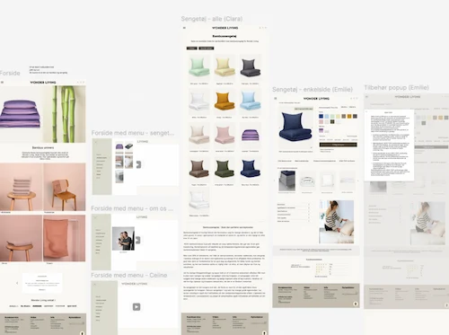
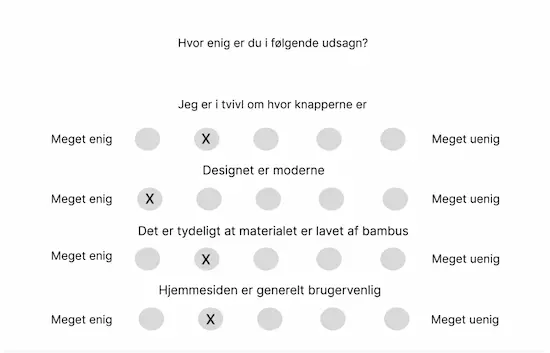

I temaet Grundlæggende indhold har jeg arbejdet med planlægning, produktion og præsentation af digitalt indhold med fokus på, hvordan indhold understøtter både brugeroplevelse og brugergrænseflader. Som afslutning på temaet har jeg arbejdet med redesign af et virksomhedssite, hvor indhold, visuel stil og teknisk implementering er samlet i en sammenhængende digital løsning. Løsningen bygger på en tydelig indholdsstruktur, en gennemarbejdet visuel stil og optimeret brug af billeder. Et af virksomhedens udfordringer var at der ikke var nok fokus på bambus. Efter forskellige designprøver fandt vi frem til den viste forside. 5 sekunders testen fandt vi særligt værdifuld da det gav et klart indblik i, at brugeren vidste hvad formålet med hjemmesiden var.
Introduktion til Grundlæggende Indhold
I temaet arbejdede jeg med grundlæggende multimedieproduktion og redesign af et virksomhedssite med fokus på sammenhængen mellem indhold, brugergrænseflader og brugeroplevelse. Jeg arbejdede med planlægning, produktion og optimering af digitalt indhold som tekst, billeder, en smule med animationer samt med filformater og billedbehandling til web. Samtidig arbejdede jeg med brugerforståelse, brugertest og UX-principper, frontend-teknologier og dokumentation af design- og udviklingsprocesser, så løsningerne blev funktionelle, brugervenlige og visuelt sammenhængende.
Løsning
Proces
Jeg arbejdede med målgruppe- og brugerforståelse for at sikre, at indholdet var relevant og understøttede formålet med løsningen. Jeg har produceret visuelt indhold ved hjælp af smartphonekamera med fokus på komposition, beskæring og farvebehandling. Derudover har jeg arbejdet med billedredigering i Adobe Photoshop, videoredigering i Adobe Premiere Pro. I forbindelse med redesign har jeg arbejdet med organisering af indhold, udvikling af fotostil, farvepalette og designguide samt udarbejdelse af sitemap, wireframes og layoutdiagram. Som vist på billedet førte alt dette til en færdig klikbar prototype i figma. Implementeringen er sket med brug af HTML, CSS og JavaScript samt GitHub til versionsstyring. Løsningen er løbende blevet testet og optimeret ved hjælp af blandt andet Lighthouse og Likertest.
Læring
Gennem temaet Grundlæggende indhold har jeg fået en bedre forståelse for, hvordan digitalt indhold planlægges, produceres og anvendes strategisk i webbaserede løsninger. Jeg har opnået praktisk erfaring i forholf til producering ad fotos og videoer. Temaet har styrket min forståelse for samspillet mellem indhold, design og teknologi samt betydningen af målgruppeforståelse og brugeroplevelse i indholdsproduktion. Et kort eksempel på dette er vist ved en Likert test vi lavede. Vi valgte blandt andet denne test for at t få en bedre indsigt i brugerens meninger og holdninger. Det har øget min forståelse for vigtigheden i at teste så man kan øge brugervenligheden og brugeroplevelsen.
